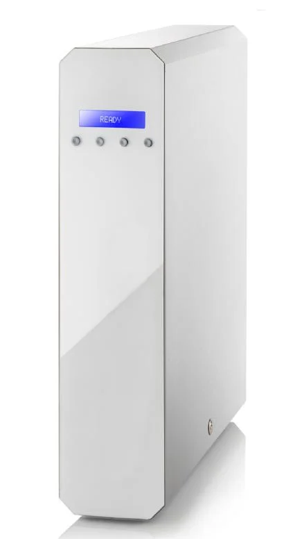
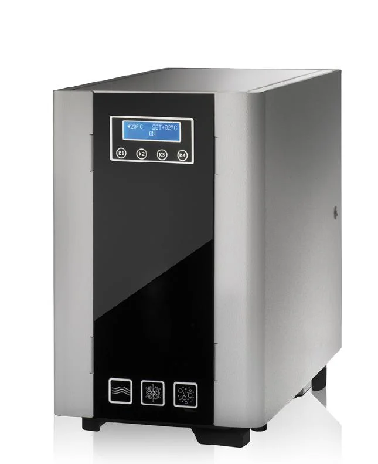
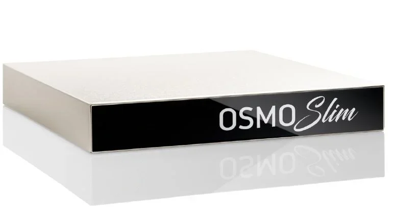
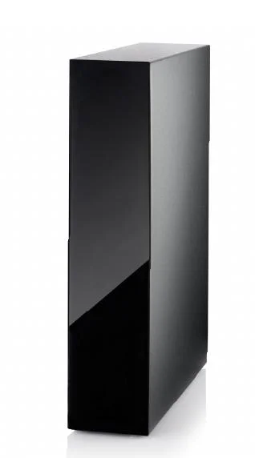
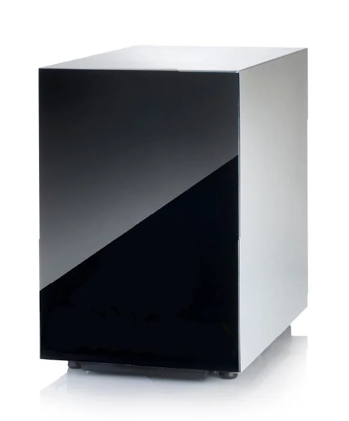
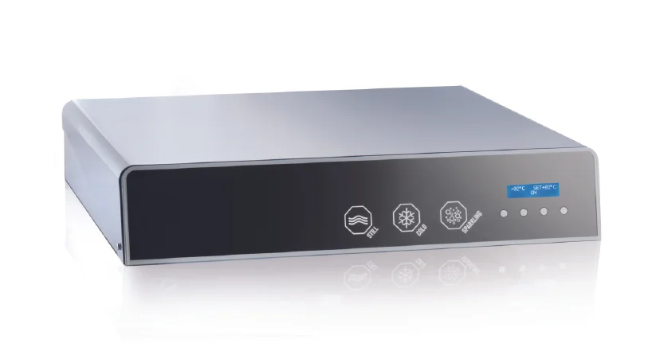

In breve
Un depuratore acqua per casa a osmosi inversa si installa sotto il lavello e filtra l'acqua del rubinetto con una membrana da 0,001 micron, che trattiene nitrati, PFAS, metalli pesanti, microplastiche e cloro. Costa indicativamente 1.800-3.800 € installato (i nostri modelli partono da 2.200 €), più 80-180 € l'anno di filtri; nel 2026 rientra nella detrazione IRPEF del 50%. Per una famiglia di 4 persone sostituisce circa 730 € l'anno di acqua in bottiglia.
Perché un depuratore in casa
Cosa risolve un depuratore d'acqua domestico
Sapore e odore di cloro
Il cloro rende sicura l'acqua della rete ma ne peggiora il gusto. Il carbone attivo e la membrana lo eliminano. Approfondisci
Nitrati, PFAS e metalli
Contaminanti invisibili che la bollitura non elimina. L'osmosi inversa li trattiene. Quali contaminanti
Microplastiche
Presenti anche nell'acqua in bottiglia. La membrana da 0,001 micron le blocca alla fonte. Approfondisci
Calcare in bollitori e caffè
Acqua senza calcare per bollitore, macchina del caffè e cucina, con gusto più pulito. Approfondisci
Casse d'acqua da trasportare
In 5 anni una famiglia di 4 persone evita di trasportare circa 12.000 kg di acqua in bottiglia.
Plastica da smaltire
Circa 8.000 bottiglie in meno da buttare in 5 anni, per una famiglia di 4 persone.
Scegli in base a come la usi
Quale depuratore per la tua casa

Acqua naturale pura
Osmosi inversa sottolavello
Per chi vuole acqua filtrata da bere e per cucinare, direttamente dal rubinetto.
- • Osmosystem 150: 150 L/h, versioni Standard, Alka e GAS
- • Osmosì: 100 L/h in 10,5 cm di spessore

Fredda e frizzante
Frigogasatore a osmosi
Per chi compra acqua frizzante: naturale, fredda e gasata da un unico rubinetto.
- • Bollicina FV: 100 L/h, display temperatura
- • BollaQuick: 90 L/h, compatto sottobanco

Poco spazio
Salvaspazio e sottozoccolo
Per cucine con il sottolavello già pieno: l'impianto sparisce dietro lo zoccolo.
- • Osmoslim: osmosi inversa in 6,7 cm
- • Frighost: fredda e frizzante in 10,5 cm di altezza
Schede tecniche complete nei modelli qui sotto. Non sai quale scegliere? Il questionario in 5 domande ti suggerisce il depuratore giusto.
Schede tecniche
I nostri depuratori acqua per casa
Tre depuratori a osmosi inversa e tre frigogasatori, tutti da installare sotto il lavello o dietro lo zoccolo della cucina. Prezzi a partire da 2.200 € installati, con detrazione fiscale del 50%.
Osmosi inversa
Filtrazione a membrana da 0,001 micron: elimina microplastiche, PFAS, metalli pesanti e nitrati. Acqua pura e controllata direttamente dal rubinetto.
OSMOSYSTEM 150
Prestazioni Top in 10,5 cm
- • Produzione acqua: 150 Lt/h (2,5 L/min)
- • Versioni: Standard, Alka e GAS
- • Scocca in acciaio Inox e alluminio
- • Sensore antiallagamento e autoflushing
- • Display di segnalazione funzionalità e conducibilità
- • Soli 10,5 cm di spessore – installazione verticale e orizzontale
- • Sistema di filtraggio a cartucce
- • Pompa in tecnopolimero per maggior resistenza al calcare

OSMOSÌ
Sottile: 10,5 cm
- • Produzione acqua: 100 Lt/h (1,6 L/min)
- • Scocca in acciaio verniciato
- • Motore 180W – Pompa rotativa
- • Vessel FV System brevettato
- • Soli 10,5 cm di spessore – installazione verticale/orizzontale
- • Pompa rotativa a palette
- • Centralina di controllo funzioni antiallagamento
- • Avviso sonoro per segnalazione funzionalità
OSMOSLIM
Salvaspazio estremo
- • Spessore record: 6,7 cm
- • 2 Membrane TW30 2012
- • Installazione in ogni angolo
- • Scocca in acciaio verniciato
- • Produzione nominale: 100 Lt/h
- • Alimentazione 220 V 50/60 Hz
- • Pompe booster a membrana 24V
- • Mix regolatore di salinità integrato
Frigogasatore ad osmosi inversa
BOLLICINA FV
Acqua Fredda e Frizzante
- • Scocca in acciaio Inox e antine in alluminio verniciato
- • Produzione acqua: 100 Lt/h (1,6 L/min)
- • Display controllo funzioni e temperatura
- • Vaschetta raccogli condensa e antiallagamento
- • Sistema di filtraggio a cartucce
- • Pompa in tecnopolimero per maggior resistenza al calcare
- • Condensazione ad acqua

BOLLAQUICK
Efficienza Sottobanco
- • Produzione acqua: 90 Lt/h (1,5 L/min)
- • Scocca in acciaio verniciato e struttura in acciaio Inox
- • Pompa booster 220V High Perf.
- • Condensazione ad acqua
- • Vaschetta raccogli condensa e antiallagamento
- • Avviso sonoro per segnalazione funzionalità
- • Centralina di controllo funzioni antiallagamento

FRIGHOST
Invisibile sottozoccolo
- • Altezza: soli 10,5 cm per installazione sottozoccolo
- • Esclusivo carbonatore Inox 304 da 1 litro
- • Fredda e frizzante nascosta
- • Display LCD controllo funzioni e temperatura
- • Esclusivo compressore ermetico 24 V
- • Sistema anti-condensa ed antiallagamento integrato
- • Produzione acqua: 2 L/min
- • Esclusivo vessel per membrana in acciaio Inox 304
Quanto costa davvero un depuratore, tra installazione, filtri e detrazione? Leggi la guida ai prezzi del depuratore acqua per casa.
Confronto
Bottiglie, caraffa filtrante o depuratore?
| Acqua in bottiglia | Caraffa filtrante | Osmosi inversa | |
|---|---|---|---|
| Costo iniziale | — | 20-60 € | 1.800-3.800 € (detraibile 50%) |
| Costo annuo (4 persone) | ~730 € | 60-180 € di cartucce | ~135 € (filtri + scarico) |
| Cloro e odori | Assenti | Ridotti | Eliminati |
| Nitrati, PFAS, metalli | Dipende dalla fonte | Non rimossi (nitrati, PFAS a catena corta) | Rimossi oltre il 95% |
| Microplastiche | Presenti | Parzialmente | Trattenute |
| Acqua fredda e frizzante | Da comprare a parte | No | Sì, con frigogasatore |
| Plastica e trasporto | ~8.000 bottiglie in 5 anni | Cartucce da smaltire | Nessuna bottiglia |
Stime per 4 persone, 8 litri al giorno, acqua in bottiglia a 0,25 €/L. Per i dettagli leggi il confronto rubinetto vs bottiglia e la guida ai prezzi del depuratore per casa.
Quanto risparmi
Famiglia di 4 persone, in 5 anni
Acqua in bottiglia
€ 3.500
Depuratore Green Water
€ 2.425
Risparmio netto
€ 1.075
Calcola il tuo caso con il simulatore di risparmio. Il calcolo non include la detrazione fiscale, che riduce ulteriormente il costo dell'impianto.
Dal primo contatto all'acqua filtrata
Come funziona
-
1
Consulenza gratuita e sopralluogo
Valutiamo l'acqua della tua zona, verifichiamo sul posto lo spazio in cucina e i collegamenti, e ti proponiamo l'impianto adatto alle tue abitudini.
-
2
Installazione professionale
Colleghiamo l'impianto sotto il lavello o dietro lo zoccolo, senza opere murarie, con fattura valida per la detrazione.
-
3
Manutenzione programmata
Ci occupiamo noi del cambio filtri alle scadenze previste; l'impianto segnala comunque con un avviso sonoro o visivo quando è il momento di intervenire.
Bonus ristrutturazioni
Detrazione fiscale del 50% sul depuratore
Nel 2026 l'acquisto e l'installazione di un depuratore d'acqua in un'abitazione rientrano nel bonus ristrutturazioni: detrai il 50% della spesa dall'IRPEF in 10 rate annuali. Servono installazione da parte di un professionista con fattura e pagamento con bonifico parlante. Dal 2027, salvo proroghe, l'aliquota scende.
Guida completa alla detrazione 50% →Dove installiamo
Depuratori per la casa a Milano e in tutta Italia
Green Water Italia ha sede a Garbagnate Milanese (MI) e installa direttamente a Milano, Monza e Brianza, Varese, Como e Lecco. Per le altre città organizziamo sopralluogo e installazione su richiesta. Scopri com'è l'acqua del rubinetto nella tua città:
Domande frequenti
Depuratore acqua per casa: le domande più comuni
Qual è il miglior depuratore d'acqua per casa?
Per bere e cucinare, il depuratore più completo è l'osmosi inversa: la membrana da 0,001 micron trattiene nitrati, PFAS, metalli pesanti, microplastiche e cloro. Se vuoi anche acqua fredda e frizzante, scegli un frigogasatore a osmosi inversa. Con poco spazio sotto il lavello, un modello sottile come Osmoslim (6,7 cm) o sottozoccolo come Frighost.
Quanto costa un depuratore d'acqua per casa?
Un impianto a osmosi inversa per uso domestico costa indicativamente 1.800-3.800 euro installato, più 80-180 euro all'anno di manutenzione dei filtri. Nel 2026 la spesa rientra nel bonus ristrutturazioni con detrazione IRPEF del 50% in 10 rate annuali, se l'impianto è installato da un professionista con fattura e pagato con bonifico parlante.
Conviene un depuratore rispetto all'acqua in bottiglia?
Sì, nel medio periodo. Una famiglia di 4 persone che beve 8 litri al giorno a 0,25 euro al litro spende circa 730 euro l'anno in bottiglie; con l'osmosi inversa il costo annuo scende a circa 135 euro tra manutenzione e acqua di scarico. In 5 anni una famiglia di 4 persone risparmia circa 1.075 euro ed evita di trasportare 12.000 kg di acqua e di smaltire circa 8.000 bottiglie di plastica.
L'acqua del depuratore a osmosi inversa fa male perché toglie i minerali?
No. Oltre l'80% del calcio e del magnesio che assumiamo arriva dal cibo, e l'OMS considera sicura l'acqua a basso contenuto minerale. Chi preferisce un'acqua più ricca può aggiungere un rimineralizzatore, che reintegra calcio e magnesio e porta il pH a 7-7,5. Approfondisci
Si può installare un depuratore in un appartamento in affitto?
Sì. L'installazione sotto il lavello è reversibile: si collega alla tubatura dell'acqua fredda e al sifone senza opere murarie. Quando lasci l'appartamento l'impianto si smonta e si porta via. Approfondisci
Ogni quanto si fa la manutenzione del depuratore?
I pre-filtri si cambiano ogni 3-6 mesi, il filtro a carbone attivo ogni 6-12 mesi, la membrana a osmosi ogni 2-3 anni. Il costo medio annuo è di 80-180 euro. L'impianto segnala con un avviso sonoro o visivo quando è il momento di intervenire, e la sostituzione dei filtri la eseguiamo noi con la manutenzione programmata.
Installate depuratori per la casa fuori da Milano?
Sì. Green Water Italia ha sede a Garbagnate Milanese e opera direttamente a Milano, Monza e Brianza, Varese, Como e Lecco; per le altre province italiane organizziamo sopralluogo e installazione su richiesta.
Un depuratore d'acqua è sicuro per neonati e bambini?
Sì, con rimineralizzatore. L'osmosi inversa elimina nitrati, piombo e PFAS, i contaminanti più critici per i neonati. Per preparare il latte dei neonati sotto i 6 mesi si consiglia un residuo fisso di 100-300 mg/L, che il rimineralizzatore permette di raggiungere. Guida all'acqua per la famiglia
Altre risposte nelle FAQ complete e nella guida all'osmosi inversa.
Trovalo in 5 domande
Qual è l'impianto giusto per te?
Rispondi a 5 domande rapide e ti diciamo quale sistema di filtrazione è perfetto per le tue esigenze.
Domanda 1 di 5
Come verrà usato il sistema?
Domanda 2 di 5
Quante persone utilizzeranno il sistema?
Domanda 3 di 5
Cosa ti preoccupa di più dell'acqua attuale?
Domanda 4 di 5
Preferisci l'acqua...
Domanda 5 di 5
Budget indicativo per l'impianto?
Il sistema ideale per te è
Green Water Italia
Vuoi un depuratore d'acqua a casa tua?
Raccontaci com'è la tua cucina e quanta acqua bevete: ti proponiamo l'impianto giusto, senza impegno.